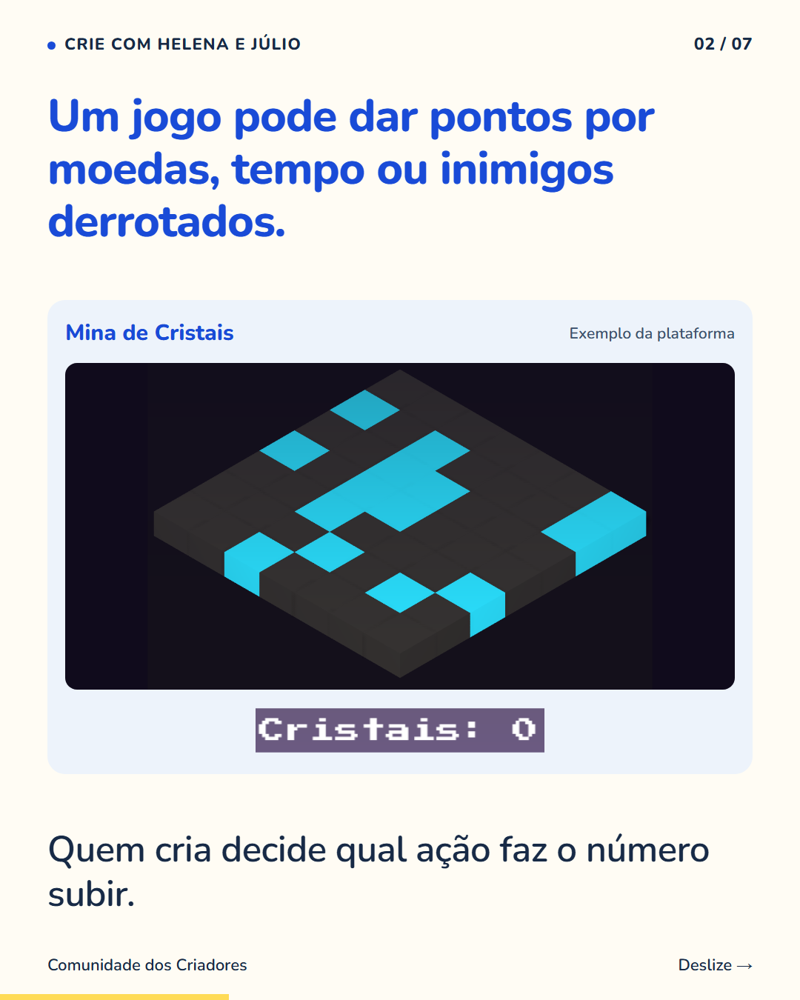
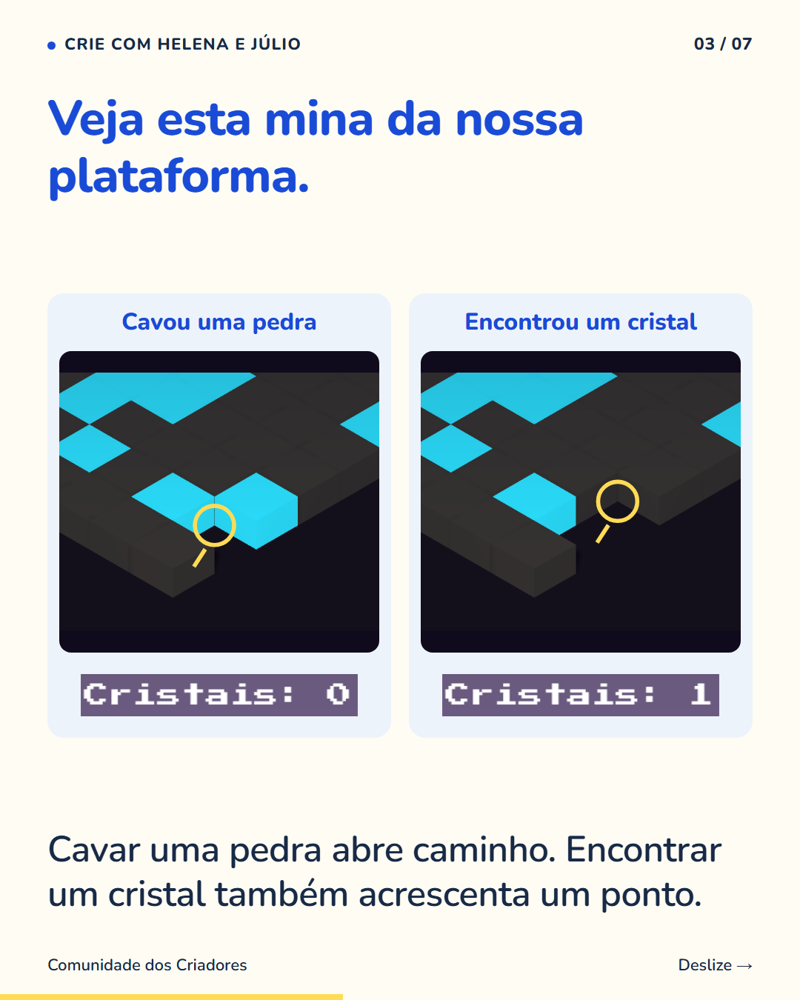
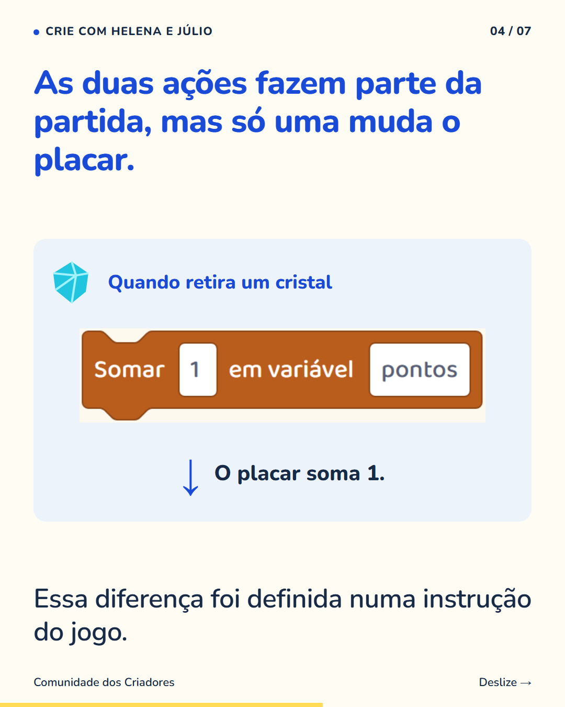
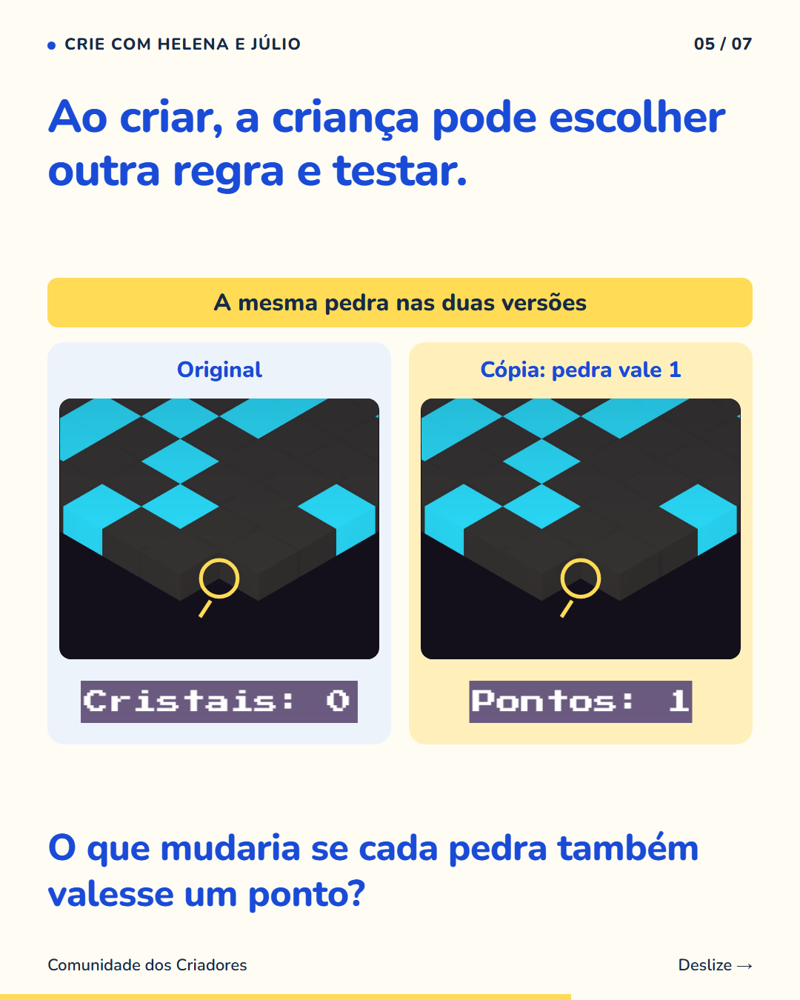
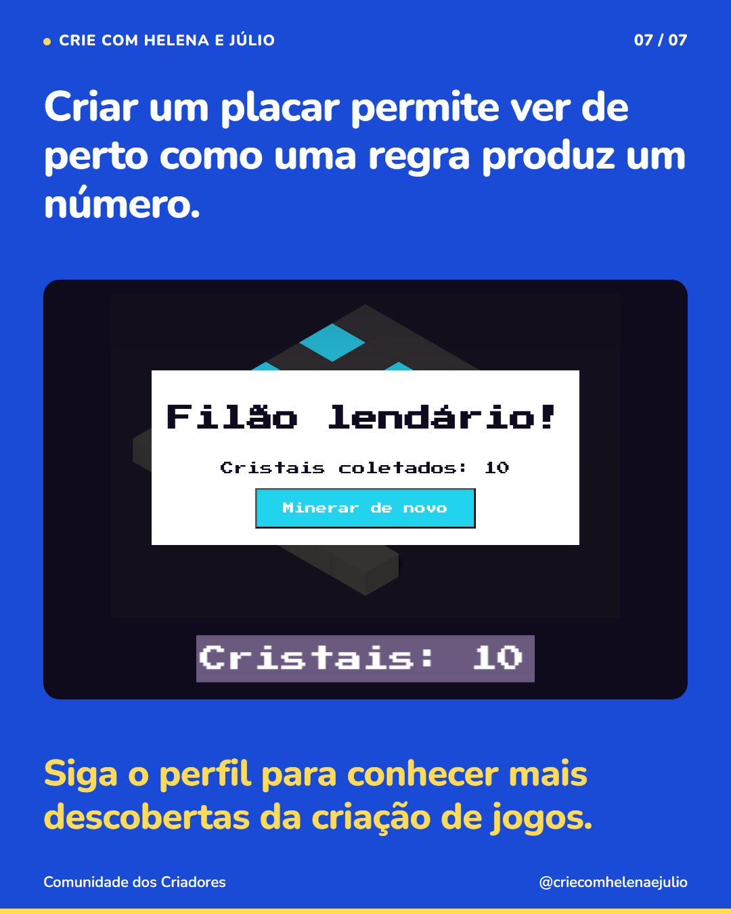

7 slides · 1080 × 1350 · Copy revisada · Pedra, cristal e a regra do placar na Mina de Cristais





Vale perguntar o que um número está mostrando antes de tirar uma conclusão sobre ele. Na Mina de Cristais, cavar pedra abre caminho, mas não soma pontos. Cavar cristal soma um. O placar registra uma ação escolhida por quem criou; outras coisas que o jogador fez ficam de fora dessa conta. Quando a criança cria uma regra de pontuação, consegue ver essa escolha acontecer: decide o que vale ponto, monta a instrução e testa. É uma oportunidade de conversar sobre o que diferentes números mostram e o que deixam de mostrar. Siga o perfil para conhecer outras descobertas ao criar jogos.